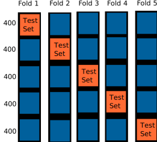

Homework 6: Logistic Regression on Movie Reviews
Chris Tralie
Learning Objectives
- Implement logistic regression
- Use cross-validation to verify that a model is not overfitting
- Derive update rules that incorporate regularization
- Uncover mathematical relationships between different supervised learning models
Background / Getting Started
The Problem
In this assignment, you will do supervised learning using a vectorized representation of text. We'll return to the movie reviews data from assignment 3, and you will likewise train a model to tell the difference between negative and positive reviews. This time, though, you'll use logistic regression on a bag of words representation, which is incredibly simple and elegant in code, and which suprisingly works even better. You will also be more careful to assess the performance of your model using something called cross validation to ensure that you are not overfitting.
Vectorizing Text with Binary Bag of Words (BBOW)
In this assignment, we will show that logistic regression performs fairly well on a simple "binary bag of words" (BBOW) representation of documents. Like the bag of words representation we discussed before, we completely disregard the order of the words and simply keep track of which words occur in each document, but this time, we don't care about how often a word occurs, just that it occurred. For example, the phrase "first go left, then go right, then go left, then go right and right again" would simply have the words ["go","again", "left", "then", "right", "first", "and"], in no particular order. Even though our representation loses all information about the sequence, this works surprisingly well in many natural language processing tasks.
Though we won't explicitly construct a data matrix in this assignment, it's helpful to think of what it might look like. In a BBOW representation, each row corresponds to a document, and each column corresponds to a word. We call the set of all words across all columns the vocabulary of our representation. For a particular document, we put a 1 in a column if the corresponding word exists in that document, and a 0 otherwise. To demonstrate a data matrix in a BBOW representation, we show below a limerick by Kaitlyn Guenther in which every "document" is simply a single line of text. The data matrix then looks like this.
| Document | there | once | was | a | wonderful | star | who | thought | she | would | go | very | far | until | fell | down | and | looked | like | clown | knew | never |
| There once was a wonderful star | 1 | 1 | 1 | 1 | 1 | 1 | 0 | 0 | 0 | 0 | 0 | 0 | 0 | 0 | 0 | 0 | 0 | 0 | 0 | 0 | 0 | 0 |
| Who thought she would go very far | 0 | 0 | 0 | 0 | 0 | 0 | 1 | 1 | 1 | 1 | 1 | 1 | 1 | 0 | 0 | 0 | 0 | 0 | 0 | 0 | 0 | 0 |
| Until she fell down | 0 | 0 | 0 | 0 | 0 | 0 | 0 | 0 | 1 | 0 | 0 | 0 | 0 | 1 | 1 | 1 | 0 | 0 | 0 | 0 | 0 | 0 |
| And looked like a clown | 0 | 0 | 0 | 1 | 0 | 0 | 0 | 0 | 0 | 0 | 0 | 0 | 0 | 0 | 0 | 0 | 1 | 1 | 1 | 1 | 0 | 0 |
| She knew she would never go far | 0 | 0 | 0 | 0 | 0 | 0 | 0 | 0 | 1 | 1 | 1 | 0 | 1 | 0 | 0 | 0 | 0 | 0 | 0 | 0 | 1 | 1 |
Note that the columns of the vocabulary can be in an arbitrary order, but the order should be consistent across documents.
Logistic Regression on Binary Bag of Words
We can view the problem of doing logistic regression on binary bag of words as a single "monster neuron" that has an input for each possible word. If that word occurs in the review, then the input is a 1, but otherwise, it's a 0. We have a weight for every word in our dictionary, as well as a bias. The input u to the logistic function
\[ f(u) = \frac{1}{1+e^{-u}} \]
is a weighted sum of all of the words in that review, plus the bias. As usual for 2-class logistic regression, the output y we're trying to match is either a 0 or a 1; we choose a 0 if it's a negative review and a 1 if it's a positive review. The picture below shows an example of this on the (very short) example review "there was a clown" using the dictonary on the above example. (Note that the way I've chosen to index the weights is arbitrary)

Our goal is to adjust the weights and bias in our model to make its predictions as close as possible to the true values of positive(1) or negative(0) reviews. Let's dive into this math a bit more. Recall that the update rules for gradient descent for logistic loss are as follows (click here to review the derivation)
\[ w_k \gets w_k + \alpha \sum_{i=1}^N x_k(y_i - y_{\text{est}}) \]
\[ b \gets b + \alpha \sum_{i=1}^N (y_i - y_{\text{est}}) \]
where in this context
- yi is a 0 if the ith review is negative or 1 if it's positive
-
yest is the estimate that our model gives us
\[ y_{\text{est}} = f(w_1x_1 + w_2x_2 + ... + w_dx_d + b) \]
Where each xk is either 1 if the corresponding word is in the review or 0 otherwise
\[ y_{\text{est}} = f \left( b + \sum_{j \in \text{review} } w_j \right) \]
and the update rules simplify to
\[ w_{k, k \in \text{review}} \gets w_k + \alpha \sum_{i=1}^N (y_i - y_{\text{est}}) \]
\[ b \gets b + \alpha \sum_{i=1}^N (y_i - y_{\text{est}}) \]
Where the j is summed over all indices of words that are in review i, and only the wk corresponding to words in the review are updated for that review.
Batch Gradient Descent
In practice, what you should do is something referred to as batch gradient descent, where you wait until you've gone through all of the reviews in your training set to update the weights. So accumulate the weight changes over all reviews in some accumulation array, and add this to the weights once you've gone through all reviews.
Part 1: Programming Tasks
There is no starter code for this assignment. Instead, you should wrangle up the movie data from assignment 3 and setup an empty notebook from which that data is accessible. You may also want to develop some methods in a separate file to keep things organized. When you are finished, upload your notebook and any .py files it reiles on
Task 1: BBOW + Logistic Regression Implementation (20 Points)
Your first task is to implement logistic regression on a binary bag of words representation of all 2000 movie reviews using logistic loss. Review the code for bag of words and the math/code for logistic regression, particularly for the logistic loss. Take a moment to plan everything out before you start writing code. It may not be immediately obvious what to do, but once you figure it out, the code is extremely simple, short, and elegant.
Here are a few tips for your implementation:
- As explained above, make the y value for a negative movie be 0 and the y value for a positive movie be 1.
- Use a dictionary to come up with a consistent dimension index for each word.
- Don't represent any of the 0's in your data. Instead, only store the dimensions for each document that were actually used. Then, when going to do gradient descent, look up the dimensions that are actually relevant for each document. As exaplined above, they are all 1's.
- Be careful to only update one weight per unique word per review. Your weights will blow up if you accidentally count a word more than once per review.
- Use a learning rate α = 0.001 and go for 200 iterations. If you've done this properly, then every single movie review should be classified properly in your entire set by the end; that is, every positive movie should evaluate to something greater than 0.5 when fed to the logistic function, and every negative movie should evaluate to something less than 0.5.
-
Recall that code to load in a movie review is as follows:
Task 2: Interpreting The Model (8 Points)
Once you've successfully trained logistic regression onf the 2,000 movie reviews, print out the top 20 words with the highest weight w, which have the largest impact on positive movie reviews (they should be positive words overall). Then, print out the words with the bottom 20 weights, which have the largest impact on negative movie reviews (they should be negative words overall). The argsort command should come in handy here.
Task 3: Cross-Validation (8 Points)
You might be a bit suspicious that we seem to get 100% classification accuracy on this dataset. Your suspicion is correct, because we never split our data into a training set and a test set! So it is quite possible that we are just overfitting the model to data, particularly because each feature vector has so many dimensions! We need to do something more to convince ourselves that our model will generalize to unseen data.
In the Markov assignment, we simply used the first 900 reviews of each type as training and tested on the rest, but we review a more rigorous strategy here known as cross-validation. What you should do is randomly split up the data into a training and a test set as follows:
- Split the data up evenly into K random chunks (which you can do with the help of np.random.permutation)
- Use each chunk as a test set, and use the rest of the chunks as the training set.
Each document will show up in exactly one "test fold" in this scheme, so simply add up all of the correct classifications over all K folds to report the total accuracy. Below is a figure showing how you should split your data up into these 5 training/test groups after shuffling it.
You can also read more about this on sklearn's web site (they have their own version of cross-validation implemented)
In this task, you should implement 5-fold cross-validation; that is, K = 5. This means that each fold should have 400 random reviews in the test set and 1600 reviews in the training set. To ensure that the test set and the training set are always isolated, you should devise the dimensions for binary bag of words using the training set only. If you find a word in the test set that was not in the training set, simply ignore it.
If this is working properly, you should see about 85% accuracy with the model, which is not bad given how simple it is!
Part 2: Mathematical Derivations
When we look at new machine learning models, it's often helpful to think of how we can tweak them or relate them to other models. To this end, I'll have you dive into some math here to review things you've done.
Task 1: Ridge Regularization Update Rules (8 Points)
If we have a lot more weights in logistic regression than we do data points, we are at risk of overfitting to our data. One way to mitigate this is to introduce something known as regularization. In general, regularization refers to an additional constraint we put on our model to control the complexity. In this part of the assignment, you will explore a particular kind of regularization known as ridge regularization. Given N examples in d dimensions, as well as a weight vector w and a bias b, the standard unregularized logistic loss minimizes the equation
\[ L(\vec{w}, b) = \sum_{i=1}^N -y_i \log(f(u_i)) - (1-y_i)\log(1-f(u_i)) \]
where\[ u_i = b + \sum_{j = 1^d} w_j x_{ij} \]
and xij refers to the jth dimension of example i. Given all of the weights in a d-dimensional vector and all of the components of xi in a d-dimensional vector. Ridge regularization adds another term weighted by some constant λ, which controls how big the weights can be
\[ L_{\lambda}(\vec{w}, b) = \left( \sum_{i=1}^N -y_i \log(f(u_i)) - (1-y_i)\log(1-f(u_i)) \right) + \frac{\lambda}{2} \sum_{j=1}^d w_j^2 \]
The larger λ is, the more the objective function penalizes a large weight.
Your job in this task is to derive the update rules for a gradient descent procedure that minimizes Lλ. In particular, you should compute the partial derivative with respect to each weight and with respect to the bias, and then re-arrange them into update rules. You may want to refer back to the notes where we took the gradient of the original expression.
NOTE: For those interested, this improved the accuracy of the movie reviews for the best choice of λ (found by cross-validation) from about 85% to about 87%. So not a substantial improvement, but an improvement nonentheless.
Task 2: Relationship Between Naive Bayes Bag of Words And Logistic Regression (8 Points)
We can actually think of a bag of words Naive Bayes classifier as a linear separator if we re-interpret the equations through a geometric lens. To see this, have a look back at the equations for Naive bayes. Then answer the following questions:
- What are the weights of each word if you interpret the maximum log posterior likelihood estimator as a linear separator? What is the bias?
- If they're in the same form, why would you expect logistic regression to do better in general?
- Which one of these is more computationally efficient?
Task 3: Relationship Between Naive Bayes Gaussian And Nearest Neighbors (8 Points)
Have a look back at the notes on Gaussian Naive Bayes and nearest neighbors notes. Focus particularly on the expression for the log posterior likelihood towards the end of the Gaussian Naive Bayes notes, as well as the expression for the Euclidean distance in the nearest neighbor notes.
Let's suppose that the standard deviations for all of the variables across all models is the same, and that there are N different classes each modeled over d variables. Show in this case that finding the maximum log likelihood class is like finding the Euclidean nearest neighbor to N points. What are the d coordinates of this point for each class?